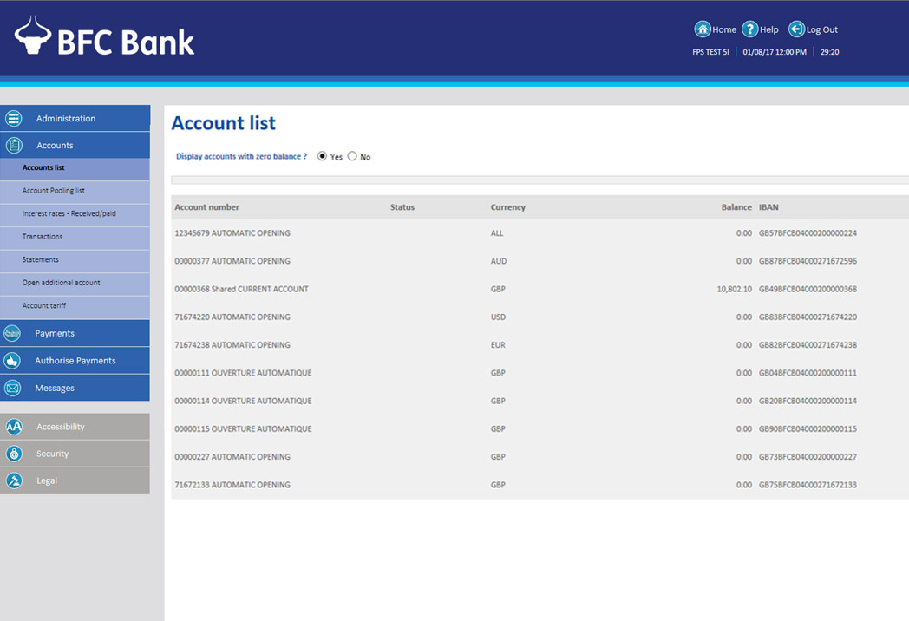
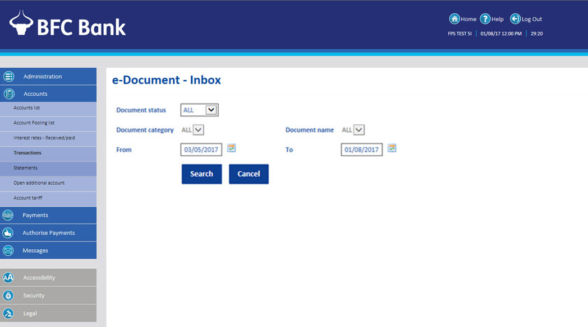
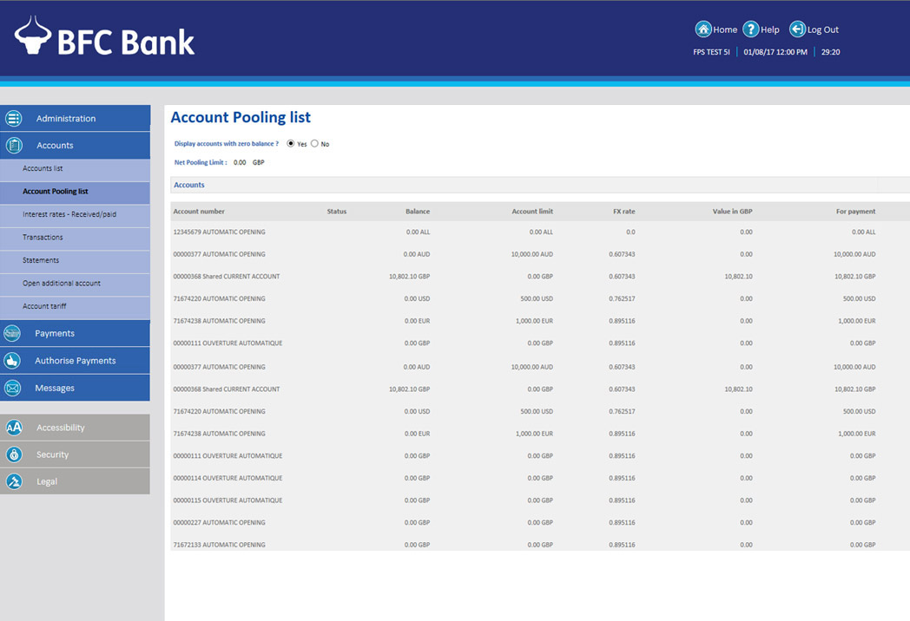
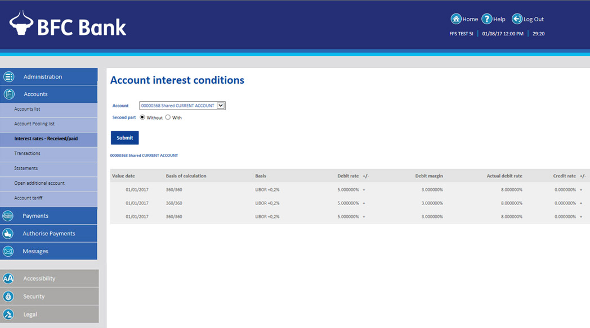
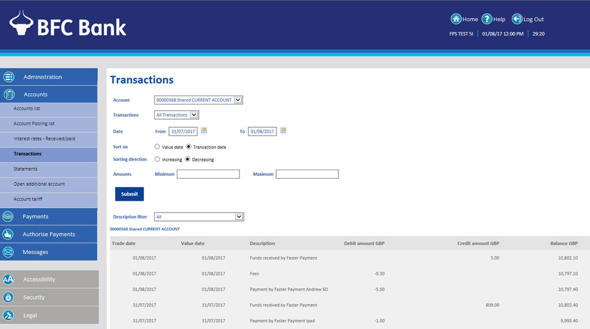

Choose Accounts to view and perform a range of activities associated with your accounts. The screen can display all accounts, including those with zero balances, or only those with positive or negative balances. Account details are displayed in interactive rows, just like the earlier screens. You then click on the row to access specific account information. (view statement below).
 Select Account Pooling list to see a list of all accounts or just those with a zero balance.
You can instantly view both received and paid interest rates on the account you have selected by the drop down menu.
Select Transactions from the Account menu to view all transactions within a certain time period. You can select the kind of transaction to view, and sort by value date or transaction date.

As you can see from the screen below, you have the option to choose the date from a calendar.